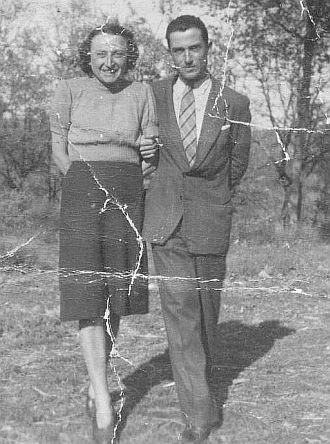

VOLPI (1960-1961); mezzadri; Castello; da Pianella.
Breve la stagione di questa famiglia a Quercegrossa; appena un anno tra il 1960 e il 1961 vissuto al Castello dove presero il posto dei Bencini. Breve, ma impegnativa sotto il comando del capoccio, dal raro nome di Isolo, che guidava una famiglia di sei persone compreso l’anziano zio Ernesto Corridoni. Inoltre, a Isolo, il 16 luglio 1961 nascono due gemelli, Claudio e Rossella, all’Ospedale di Siena, e ciò aumentò a otto il numero delle bocche e, mentre la puerpera era ricoverata, egli doveva andare al vecchio podere, verso Pianella, per la raccolta del grano che lui aveva seminato e che per contratto gli apparteneva. Decisi a partire, tornano a Montalbuccio a fine anno in un podere sfitto che però hanno seminato abitando al Castello da dove Isolo partiva in bicicletta per raggiungerlo. A Montalbuccio i Volpi rimasero a mezzadria fino al 1971 quando Isolo lasciò i campi da vecchio, essendo nato nel 1910. Proveniva da Montalcino, da Poggio alle Mura, e si ricordano i suoi viaggi al mercato di Paganico e al mare per comprare sale e sardine specialmente in tempo di guerra. Trasferitosi a Pianella con la moglie Vera, ebbe tre femmine, Mirella, Ivana e Rossana prima della nascita dei gemelli. Ivana sposerà poi Valerio Berrettini conosciuto a Quercegrossa.
VOLPINI (1935 - Residente); minatori/operai; Pietralta/Quercegrossa; da Frassi.
Vasco Volpini fu tra i personaggi più conosciuti della vecchia Quercegrossa. Il 21 marzo del 1915 al Brefotrofio dell’ospedale di Siena si registra la consegna di un infante di sesso maschile nato nella Sezione Occulte da madre nubile: era il nostro Vasco. Venne partorito e lasciato da madre ignota che per motivi propri non era in grado di allevare il bambino. Come poi accadeva, il neonato venne dato a balia per l’allattamento ed è così che Vasco passò da Quercegrossa per dirigersi a Pomona in braccio a Ersilia Rossi, la moglie di Egisto, che l’aveva preso dall’Ospedale. Rimase forse meno di un anno a Pomona e quindi consegnato alla nuova famiglia. Viene poi ricordata una sua breve ma sofferta permanenza in una famiglia di Lucignano Val di Chiana.

Anni dopo, già giovanetto, ritorna nella parrocchia di S. Leonino e lo vediamo garzone presso Luigi Fontani del Capanno. L’annotazione della prima comunione fatta nel 1925 dimostra che in quell’anno era già al Capanno. Nel marzo del 1934 cambia famiglia e si trasferisce a Frassi presso Armido Fontani, parente dei Manganelli di Pietralta.
Vasco e Teresa, fidanzati.
E’ da questi che l’anno dopo prenderà dimora, ed entrerà per sempre nel popolo di Quercegrossa. A Pietralta conosce Teresa dei Bianciardi di Poggiagrilli e si fidanza con lei. Inizia in quel tempo il lavoro di miniera e si sposta a Quercegrossa dove coabita con il Pallassini Angelo pigionale di Giotto e forse per la prima volta trova una propria indipendenza. Richiamato militare per la guerra viene comandato in Sardegna dove resterà fino al termine del conflitto. In una licenza, il 15 febbraio 1941, trova il tempo di sposarsi e di accasarsi nell’appartamento del Brogi dietro la bottega. Aveva 25 anni e Teresa 21. I testimoni furono Dante e il cognato Camillo Bianciardi. Nel 1947 nacque Elina e da quel tempo la semplice vita di Vasco si svolse nella più completa normalità tra la famiglia, il paese e il lavoro in miniera, per finire poi nell’industria del legno. Negli anni 1968/69 abbandonò la sua abitazione per trasferirsi nel Palazzaccio, nel quartiere che era stato dei Carletti. Vi dimorò per circa un decennio poi entrò inquilino nella casa ex Bonucci accanto alla chiesa, sulla strada principale. Giunto alla pensione sopravvisse alcuni anni fino al 2 dicembre 1983. Le sue donne, rimaste sole, mantennero l’appartamento in Quercegrossa dove oggi vive Elina dopo la morte di Teresa avvenuta nel 2005.
Inizio pagina
Indice famiglie del '900
Indice dei Capitoli